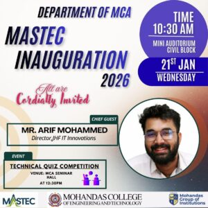
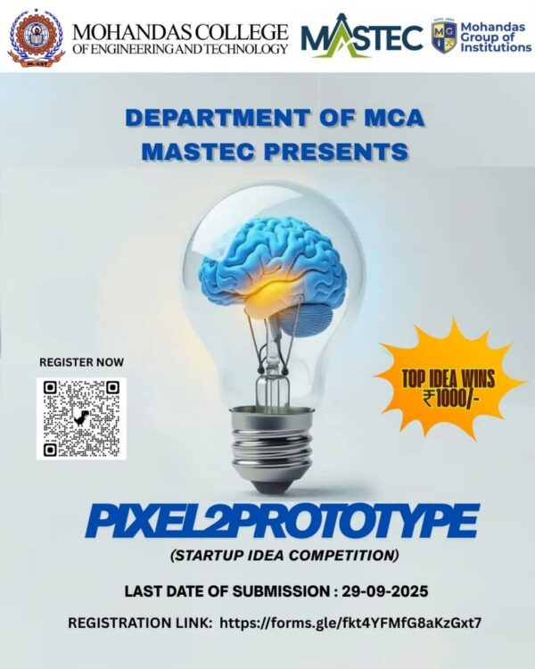
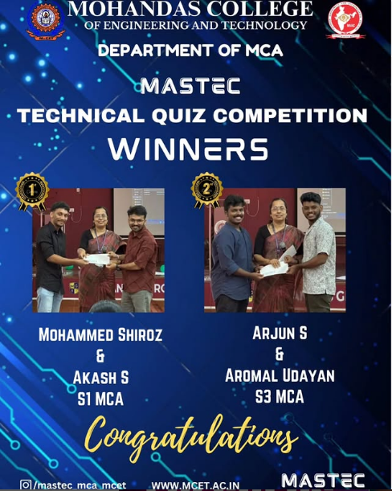
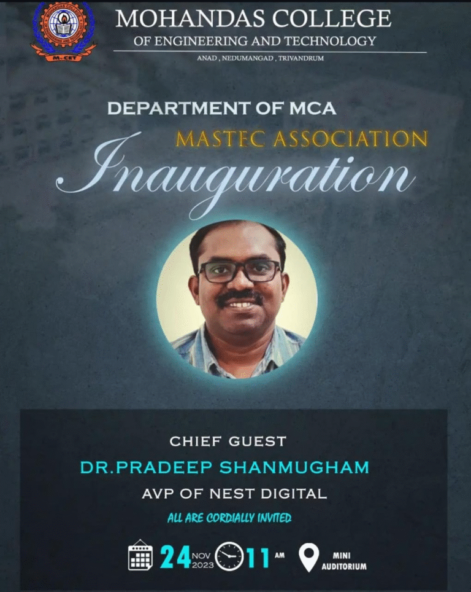
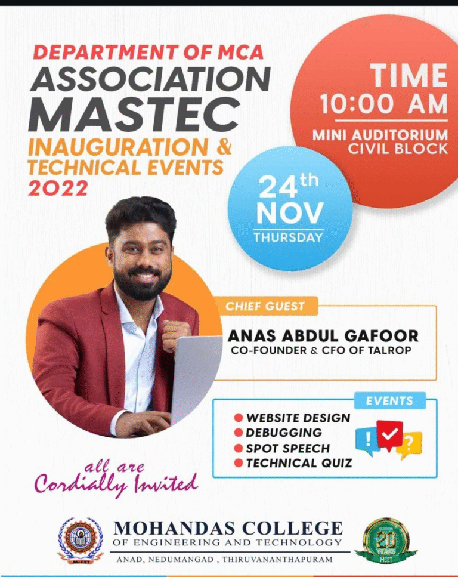
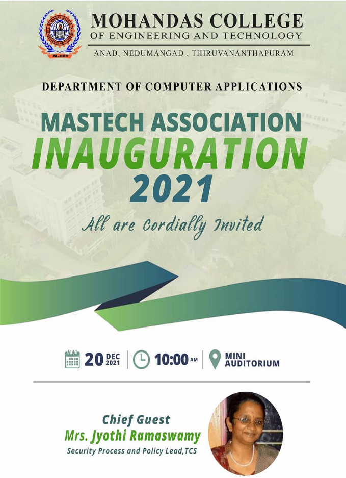
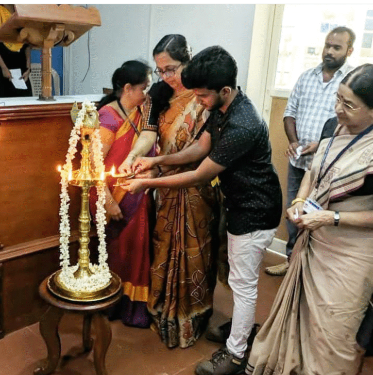

A forum of students and staff of MCA, striving toward technical excellence and total personality development through continuous seminars, competitions, and webinars.

The Department of Master of Computer Applications (MCA), Mohandas College of Engineering and Technology, successfully organized the MASTEC Inauguration 2026 on 21st January 2026 (Wednesday). The event marked the formal inauguration of MASTEC activities for the academic year and aimed to motivate students through academic, technical, and co-curricular initiatives.
The inauguration was graced by the presence of Mr. Arif Mohammed, Director, JHF IT Innovations, as the Chief Guest. His participation added value and industry perspective to the event.
The programme commenced at 10:30 AM with a prayer, followed by a warm welcome address by Prof. Sreeja K., HoD in charge, Department of MCA. The inaugural session included the following highlights:
The programme concluded successfully at 12:15 PM..

The Department of Master of Computer Applications (MCA), Mohandas College of Engineering and Technology, under the banner of MASTEC, successfully organized Pixel2Prototype, a Startup Idea Competition. The event was conceptualized to nurture innovation, entrepreneurial thinking, and problem‑solving skills among students by encouraging them to transform creative ideas into feasible prototypes
Participants were required to register online through a Google Form. A QR code and registration link were provided in the event poster for easy access. Students submitted their innovative startup ideas within the stipulated deadline.

The Department of MCA, Mohandas College of Engineering and Technology, successfully conducted the Technical Quiz Competition organized by MASTEC on 30th September 2024 at the MCA Seminar Hall. The event, held from 12:00 PM to 12:30 PM, witnessed enthusiastic participation from students across semesters, showcasing their technical knowledge and quick-thinking abilities.
The quiz aimed to test participants on diverse domains of computer applications, logical reasoning, and problem-solving, creating an engaging and competitive atmosphere. Students displayed great enthusiasm, teamwork, and presence of mind, making the event both exciting and intellectually stimulating.
After a tough battle of brains, the winners were announced:
The winners were felicitated by the faculty of the MCA department, and their achievement was celebrated with applause and appreciation.
The event not only highlighted the technical acumen of the students but also encouraged peer learning and healthy competition. MASTEC continues to provide such platforms to nurture talent, teamwork, and innovation among MCA students.

MASTEC ’23 commenced with the inaugural address by Dr. Pradeep Shanmugham, AVP of Nest Digital, held at the Civil Auditorium on November 24, 2023, at 11:00 AM. The event opened with a warm welcome speech from Prof. Sreeja K, Head of the Department of MCA. Dr. Ashalatha Thampuran, Director of MCET, delivered the Presidential address, emphasizing the importance of technological advancements in today’s world. Principal Dr. S Sheela also addressed the gathering, highlighting the significance of such platforms in fostering innovation and learning.
Dr. Pradeep Shanmugham later delivered an insightful technical talk on the evolution and future prospects of technology. The Chief Guest was honored with a memento by Dr. Ashalatha Thampuran, recognizing their contribution to the event. Certificates were distributed to the winners of various competitions held during MASTEC-2023, celebrating their achievements and contributions to the field of technology. Ms. Neeraja B, Joint Secretary of MASTEC, extended heartfelt thanks to all participants and contributions to the field of technology.

MASTEC was conducted on 24th November 2022 by MCA department at Mini Auditorium Civil Block. Mr. Anas Abdul Gafoor, Co-founder and CFO of Talrop was the chief guest on the occasion. The motive of this programme was to improve the overall development of the students. Various competitions were held as part of the programme.
The programme started with prayer and lighting the ceremonial lamp by the chief guest accompanied by Dr. Ashalatha Thampuran (Director of MCET), Dr. S Sheela (principal of MCET), Prof. Sreeja K (HOD of MCA Department) and some other leading dignitaries.
Dr. Ashalatha Thampuran delivered presidential address and Principal’s address was done by Dr. S. Sheela. The chief guest gave a motivating speech regarding the technical challenges talk about past, present and future growth of technologies. Afterwards Prof. Tomy Thomas (Training and placement Coordinator) delivered felicitation speech. Prizes were distributed to the winners of the events by chief guest.
The chief guest Mr.Anas Abdul Gafoor was felicitated by the Director of MCET with a memento.
HODs and faculty members of various departments of the college attended the function. The inaugural session has been concluded with plan of action for the academic year 2022-23 by Aparna D came to an end with vote of thanks delivered by Prejin P.R Organizing Secretary.

The inauguration for the association Activities of MASTEC was conducted on 20th December 2021 at CGPC hall. The chief guest of the event was Ms. Jyothi Ramaswamy, Manager, Cyber Security Group, TCS. The inauguration was graced by the presence of Dr. Shabu S. (Principal-in-charge, MCET), Prof. Sreeja K (HOD, MCA) and along with student and staff community of the MCA department.
The function started with prayer. The welcome address was delivered by Prof. Sreeja K where she warmly welcomed the dignitaries and the student community and encouraged the students to be part of the student association activity and get benefited.
Association activities of Mastec 2021 was inaugurated by the chief guest Ms. Jyothi Ramaswamy, by lighting the lamp.The inaugural session came to an end with vote of thanks delivered by Mr. Gokul, MASTEC Secretary.
In the afternoon section, various inter and intra department competitions were held as part of the programme.
Certificates were also given to winners of various competitions conducted as part of the MASTEC-2021.

The inauguration for the Association activities of MASTEC for the academic year 2019-20 was conducted on 4th Oct 2019 at CGPC hall. The chief guest for the event was Mr. Ajith Nair (Director Delivery, Speridian Technologies Pvt. Ltd) and technical talk by Mr. Ramu Balachandran (Technical Architect, Speridian Technologies Pvt. Ltd). The inauguration was graced by the presence of Dr. Ashalatha Thampuran (Director, MCET), Dr. Sobha Manakkal (Principal in charge, MCET), Prof. Sreeja K. (HOD-in charge, MCA department) and along with the student and staff community of the department of Computer Applications.
The chief guest Mr. Ajith Nair was felicitated by the Director of MCET with a memento and he mentioned about the need for innovation. Mr. Ramu Balachandran gave a technical talk about past, present and future growth of technologies. Prof. Sreeja K. HOD-in charge, MCA department presented a memento to Mr. Ramu Balachandran. Prizes were distributed to the winners of the events by Prof. Sreeja K in MCA department.
HODs and faculty members of various departments of the college attended the function. The inaugural session came to an end with vote of thanks delivered by Mr. Abhijith, MASTEC Secretary.